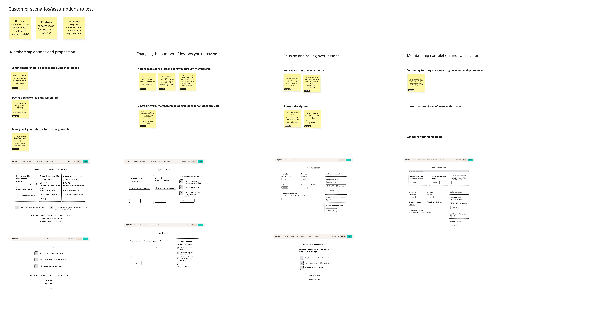
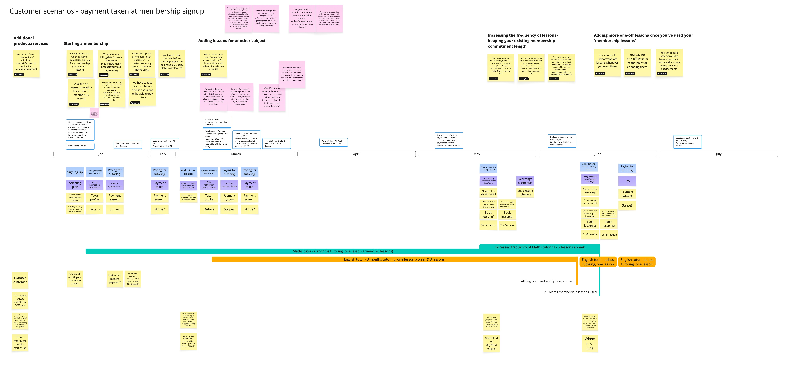
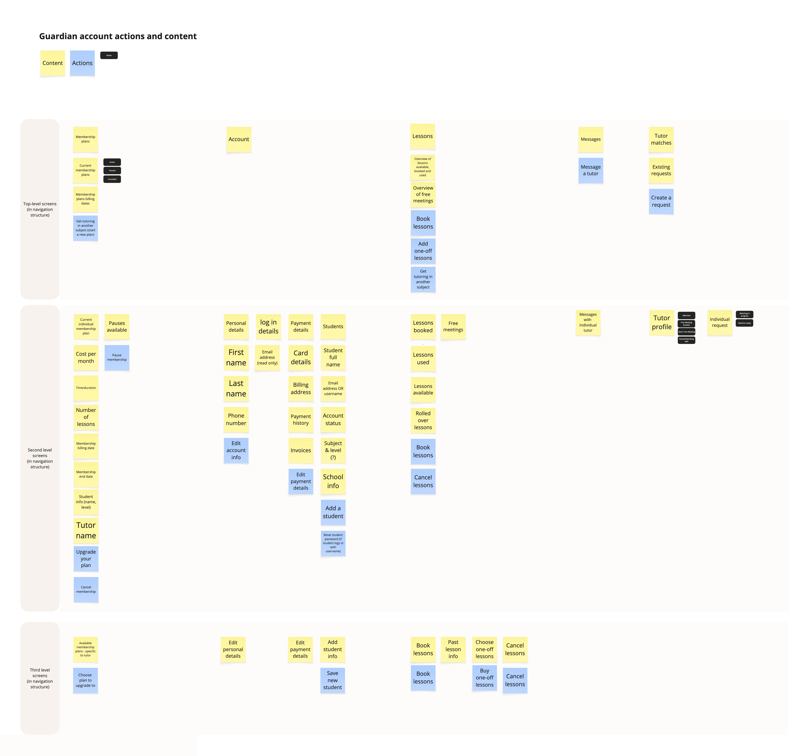
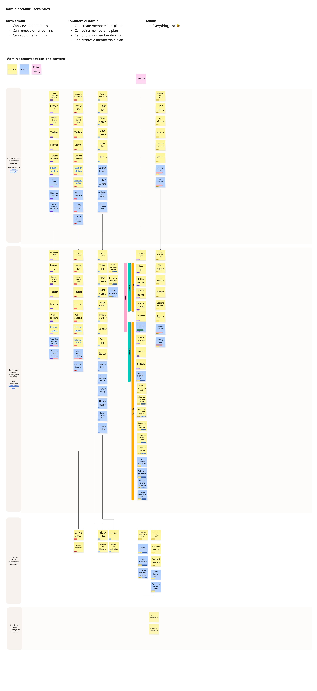
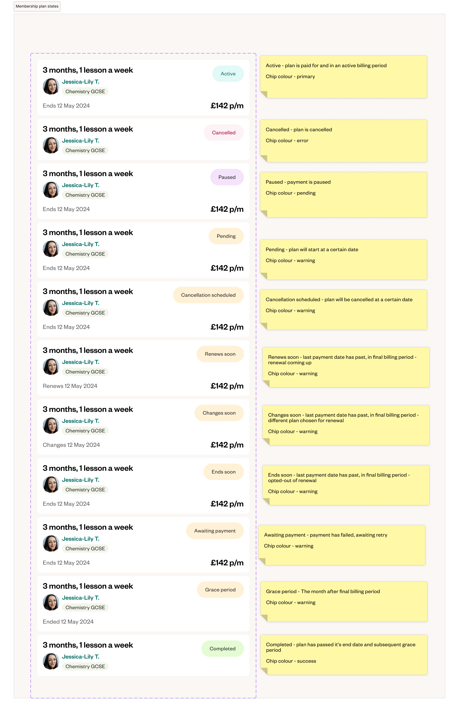
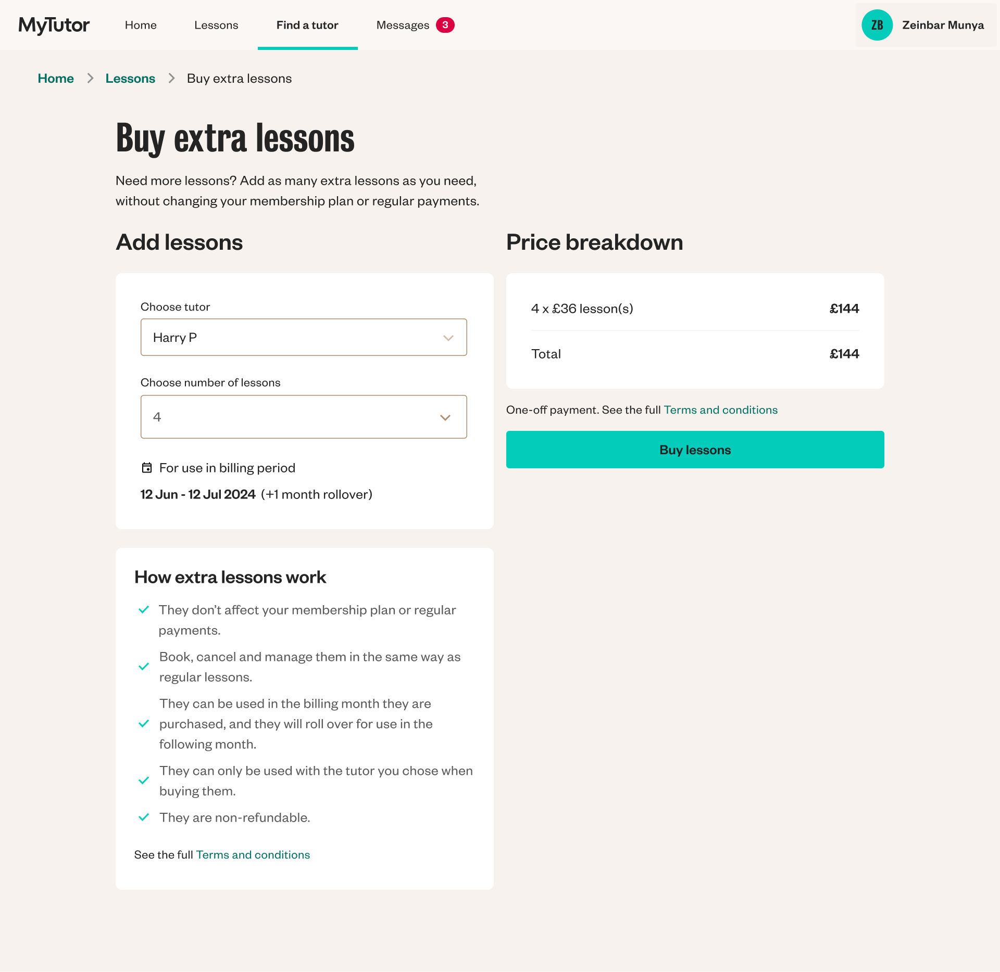

EdtechB2CResponsive WebProductService
MyTutor —
Context
As a business, MyTutor had identified a subscription-based model as a potential way to increase our customer Lifetime Value (LTV) and improve our unit economics.
Our existing tech stack and platform also had many issues, including a monolithic architecture, and payment mechanism that wasn’t compliant with recent legislation. We wanted to combine re-platforming with the introduction of a membership model and updated service proposition that enabled us to diversify our revenue from solely live, tutor-led interventions.
Outcome
We defined, designed and delivered a new platform MVP, introducing a subscription-based membership model, in 6 months. The new platform led to an increase in retention, and improved customer LTV by nearly 40%.
Team
I co-led design and research, in collaboration with other product designers, product managers, product leadership and wider group of commercial stakeholders.
What I did
Strategy
Built on discovery and commercial insights to shape the product proposition - from the overall membership model as a wrapper for diversified product and service offerings, to prioritisation and risk management across delivery squads.
Discovery
Tested core parts of different potential service and commercial models - including payment frequency, commitment length, and lesson flexibility and management - with customers to identify opportunities, risks, and demand.
Scope definition
Defined high-level requirements for the new platform, like membership plan options and cancellation terms, in collaboration with product and commercial leadership. Highlighted the riskiest assumptions to test related to each area.
Information architecture
To support our four end-user groups and their wide range of needs and goals in a scalable, maintainable way, I facilitated workshops and led the mapping of content and actions across our different end-user platforms. Balancing a holistic overview to reuse system and interaction patterns, while flexing for unique user needs.
Cross-functional facilitation
Brought specialists from across the business together to ensure we complied with consumer and worker legislation, supported internal finance processes, and delivered on time.
Experience design
Designed flows and features for our different user groups, including customer lesson management, tutor pay, and ops team customer support tools.
Measuring success and iterating
Used qualitative and quantitative data including product analytics, survey responses and customer support requests to identify and prioritise problems and design solutions post-launch.

I conducted early discovery to test core parts of different potential service and commercial models - including payment frequency, commitment length, and lesson flexibility and management.

I mapped out the implications of different service propositions, visualising the impact of different kinds of payment model on the service, and customer experience. We explored how these variable interacted, and how to combine them to deliver a model and proposition that worked for customers and the business.

I ran workshops with our legal and finance teams, to understand the legislation we needed to comply with, and work together to map solutions to key tutor journeys - like getting paid for teaching lessons.


Once we’d defined the main commercial and service proposition, I led workshops to design different end users’ accounts information architecture.


One of the main differences between our old, pay as you go model, and the first iteration of our membership model was the commitment level. As a customer, longer term commitments unlocked greater discounts, and introduced associated requirements like plan renewal, pausing, and upgrading. I led the work to define these stages, and design the experience for people who wanted to have more lessons, stop having lessons for a while, or stop having them completely. It was important to balance value and flexibility, with business requirements and contractual agreements, to enable us to deliver a service that worked for the variety of learner needs we served, but also delivered the required increases in LTV and retention that we were targeting.

We delivered an MVP of the platform experience to a few hundred new customers after around 6 months, and continued to iterate on the commercial model and platform functionality after that time. Some of the features we introduced soon after launch were the ability to buy extra lessons, and the ability to schedule your membership start date. We knew from customer research that there were a variety of reasons you’d need extra lessons, from prep for upcoming exams, to help with a particularly tricky topic. And we learnt from our sales’ teams interactions with early customers that there was often a gap between when people chose the service they wanted to use, compared to when they wanted it to start - which was particularly important given payment was made up front for a months lessons. Explore the site